리눅스마스터-1급 (2010-09-04 기출문제)
1과목: 리눅스 실무의 이해
1. 시스템의 성능을 나타내는 4가지 요소에 대한 설명으로 틀린 것은?
- Throughput : 단위시간당 처리량을 나타낸다.
- Turn-around Time : 작업이 제출되어 결과를 얻을 때까지의 총 소요 시간을 나타낸다.
- Reliability : 시스템이 얼마나 정확하게 작동하는지를 나타낸다.
- Availability : 시스템이 처리할 수 있는 작업 종류의 다양성을 나타낸다.
(정답률: 74%)

2. 상업적인 목적을 위한 마케팅의 일환으로 일정한 기간 동안 무료로 사용할 수 있게 하는 등의 부분적인 제한을 설정하여 배포되지만, 계속해서 사용하기 위해서는 비용을 지불하여야 하는 소프트웨어는?
- 오픈 소스 소프트웨어(Open Source software)
- 카피레프트 소프트웨어(Copylefted software)
- 쉐어웨어(Shareware)
- GPL 소프트웨어
(정답률: 74%)
3. 리눅스 배포판에 대한 설명 중 틀린 것은?
- 사용자의 편의성을 위하여 커널과 여러 가지 프로그램을 하나의 패키지로 묶은 것이다.
- 대표적인 배포판으로 레드햇, 데비안, 맨드레이크 등이 있다.
- 배포판들은 리눅스 커널이라는 공통분모를 가지고 제작되어 진다.
- 배포판은 동일한 응용프로그램들을 업체들만의 패키징 방법으로 묶어서 공개하고 있다.
(정답률: 53%)
4. 운영체제의 발전순서를 기술한 것 중 알맞은 것은?
- 일괄처리시스템-시분할시스템-다중모드시스템-분산처리시스템
- 시분할시스템-다중모드시스템-분산처리시스템-일괄처리시스템
- 다중모드시스템-분산처리시스템-일괄처리시스템-시분할시스템
- 분산처리시스템-시분할시스템-일괄처리시스템-다중모드시스템
(정답률: 91%)
5. 최근에는 리눅스가 다양한 분야에 사용되어지고 있다. 리눅스가 제도권으로 진입하여 사용되어 지게된 성공요인으로 보기 어려운 것은?
- 기본적으로 무료배포를 전제로 한 공유와 나눔의 철학적 배경
- 다양한 개발자들에 의해 기능개선이 가능토록한 소스코드의 공개
- 기술의 폐쇄성을 무기로 하는 독점 소프트웨어에 대한 반발 심리
- 윈도우즈 시스템과의 데이터 호환성 확대와 관리미숙으로 인해 시스템에 문제 발생 시 이에 대한 완벽한 보상체제 확립
(정답률: 67%)
6. SCSI(Small Computer System Interface)의 특징에 대한 설명으로 틀린 것은?
- 현재의 SCSI 세트들은 병렬 인터페이스이다.
- SCSI 기반의 저장기기는 대체로 IDE 저장기기보다 고가이고 고성능이다.
- 현재 SCSI는 PC에서만 호환되고 있지만 이후 리눅스 서버에서도 사용이 가능할 것으로 예상 된다.
- SCSI는 스캐너, 프린터 등과 같은 주변자치를 이전의 인터페이스보다 더 빠르고 더 유연하게 통신할 수 있게 해주는 인터페이스이다.
(정답률: 88%)
7. 운영체제에서 부트매니저에 대한 설명으로 틀린 것은?
- 다양한 운영체제를 설치하여 사용하는 경우 부팅할 때 본인이 필요로 하는 운영체제를 선택하여 부팅할 수 있도록 도와주는 기능이다.
- 윈도우를 설치한 후 리눅스를 설치하면 우선 윈도우로 부팅된 후 리눅스 LILO/GRUB가 실행되어진다.
- 부트매니저를 대표하는 것은 OS/2의 부트관리 프로그램이다.
- 리눅스에서는 LILO와 GRUB가 대표적인 부트로더이다.
(정답률: 69%)
8. 리눅스의 터미널 모드에서 shutdown 명령을 실행시켰을 경우에 대한 설명으로 틀린 것은?
- shotdown -h now 명령어의 옵션이 -h는 halt의 뜻을 나타내는 옵션이다.
- shotdown -h now 명령 중 now는 지금 바로 실행하고자 하는 의미이다.
- shotdown -h now를 실행시키면 종료 후 시스템이 자동으로 reboot 된다.
- shotdow -h +60 이라고 실행하게 되면 시스템을 1시간 이후에 shotdown 시킬 수 있다.
(정답률: 74%)
9. 리눅스 파일시스템에서 ex2의 특징으로 보기 어려운 것은?
- ex2 파일시스템은 자신이 위치하고 있는 논리적인 파티션을 블록으로 다시 나눈 것이다.
- 파일시스템에서 무결성의 핵심을 이루는 정보를 중복해서 저장한다.
- 디렉토리는 파일시스템 상에서 파일에 대한 접근경로를 생성하고 저장하는 특별한 의미의 파일로 취급된다.
- ex2 파일시스템에서는 저널링에 의해 파일 시스템을 복구하였으나, ex3 파일시스템 부터는 fsck(file system check) 기능이 제공되고 있다.
(정답률: 67%)
10. x 윈도우 시스템을 이루는 4가지 요소로 보기 어려운 것은?
- 서버/클라이언트
- X 저널
- Xlib, Xtoolkit
- X 프로토콜
(정답률: 57%)
11. 다음 중 윈도 매니저로 보기 어려운 것은?
- x protocol
- Enlightenment
- FVWM
- WindowMaker
(정답률: 44%)
12. 쉘(Shell) 환경변수에 대한 설명으로 틀린 것은?
- HOME : 사용자 홈 디렉토리
- PS1 : 프롬프트 설정 값
- PWD : 현재 사용하는 셀의 패스워드 값
- TERM : 터미널의 종류
(정답률: 65%)
13. bash 쉘에서 사용되는 특수문자에 대한 설명으로 틀린 것은?
- * : 0개 이상의 문자와 일치하는 파일 치환 대표 문자 기호
- ? : 단일 문자와 일치하는 파일치환 대표문자 기호
- $ : 이전의 명령이 실패하면 실행하는 조건부 실행기호
- & : 명령을 백그라운드로 실행하고자 할 경우 (독립적으로 사용)에 사용되는 기호
(정답률: 73%)
14. 프로세스와 관련된 용어의 설명 중 틀린 것은?
- 프로세스(Process) : 실행 중인 프로그램의 인스턴스
- 프로세서(Processor) : 특정기능을 수행하기 위한 명령어의 조합
- 프로시저(Procedeur) : 프로그램의 일부로 공통적으로 사용되는 특정 루틴
- 스레드(Thread) : 프로세스의 일부 특정 데이터만 가지고 있는 가벼운 프로세스
(정답률: 66%)
15. 비선점(Non-Preemption) 스케줄링 기법에 대한 설명으로 옳지 않은 것은?
- 대화식 시분할시스템에 적합하다.
- 긴 작업이 짧은 작업을 오랫동안 기다리게 하는 경우가 발생할 수 있다.
- 프로세스 간의 문맥교환 횟수가 적고, 보통 일괄 처리 시스템에 적합하다.
- 한 프로세스가 일단 CPU를 할당 받으면 다른 프로세스가 CPU를 강제적으로 빼앗아 갈 수 없는 방식이다.
(정답률: 17%)
16. 다음 중 디지털신호와 아날로그신호에 대한 설명으로 틀린 것은?
- 아날로그 데이터는 전기적 신호가 연속적으로 변하는 것으로 전자파의 연속적인 값으로 이루어진다.
- 디지털 데이터는 이산적인 값으로 전압 펄스의 연속적으로 구성되어 있다.
- 통신 전용망 및 ISDN은 아날로그 통신망에 해당된다.
- 아날로그 전송은 장거리 전송 시 잡음 성분까지 포함되어 신호의 정확성을 기할 수 없으며, 전송 속도나 전송 품질의 향상이 어렵다.
(정답률: 50%)
17. 다음에서 설명하는 네트워크 토폴로지의 종류는?
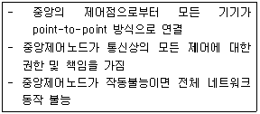
- 스타(star) 토폴로지
- 링(ring) 토폴로지
- 버스(bus) 토폴로지
- 복합링(dual-ring) 토폴로지
(정답률: 86%)
18. IP 주소를 실제로 컴퓨터상에서 네트워크 주소와 호스트 주소로 구분하기 위하여 서브넷마스크(Subnet Mask)를 이용한다. B 클래스의 네트워크 주소를 구하기 위한 서브넷마스크에 해당하는 것은?
- 0.0.0.0
- 255.0.0.0
- 255.255.0.0
- 255.255.255.0
(정답률: 69%)
19. ifconfig 명령을 사용하면 eth0 장치에 IP 주소를 직접 할당할 수 있다. 하지만, 이 주소는 리눅스 시스템을 다시 시작하게 되면 사라지게 된다. 리눅스 시스템을 시작할 때마다 자동으로 특정 IP주소를 할당하기 위해서는 다음 중 어느 파일에 IP주소를 설정하여야 하는가?
- /etc/hosts
- /etc/resolv.conf
- /etc/sysconfig/network
- /etc/sysconfig/network-scripts/ifcfg-eth0
(정답률: 71%)
20. 라우팅테이블에서 210.101.242.0의 네트워크에 대한 라우터를 삭제하고자 할 때 가장 올바른 명령은?
- route rm -net 210.101.242.10
- route del -net 210.101.242.10
- ifconfig -net 210.101.242.10 down
- netstat -d 210.101.242.10
(정답률: 40%)
2과목: 리눅스 시스템 관리
21. 다음 ( )안에 들어갈 내용으로 알맞은 것은?
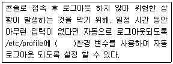
- TMOUT
- LGOUT
- TIMEOUT
- LOGOUT
(정답률: 75%)
22. 다음 ( )안에 들어갈 내용으로 가장 알맞은 것은?
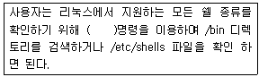
- lS -l /bin/*sh
- find /bin/?sh
- touch /bin/*sh
- rm /bin/?sh
(정답률: 50%)
23. 다음의 내용과 가장 관련이 높은 명령어는?
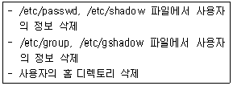
- useradd
- userdel
- usermod
- rmuser
(정답률: 59%)
24. 현재 사용자와 root 사용자의 쉘 환경 설정이 다르다고 가정할 때, 변경된 root 사용자의 쉘 환경이 나머지 셋과 다른 것은?
- su -
- su -l root
- su - root
- su
(정답률: 61%)
25. 다음 file.txt 파일과 동일한 퍼미션을 갖고 잇는 파일을 모두 찾아내기 위한 명령으로 알맞은 것은?
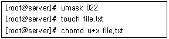
- find / -perm 744
- find / -perm 765
- find / -perm 544
- find / -perm 565
(정답률: 58%)
26. 현재 사용자 작업 디렉토리가 다음과 같을 때, 부모 디렉토리의 파일 리스트를 출력해 주기 위한 방법 중 알맞지 않은 것은?
- cd /home 명령으로 디렉토리 변경 후 ls
- ls ../
- ls /home
- ls ./
(정답률: 62%)
27. 서버 관리자인 홍길동은 사용자들이 시스템의 디스크 공간을 무제한적으로 사용하지 못하게 하려고 한다. 이에 적합한 명령어는 무엇인가?
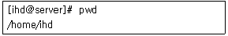
- quota
- grep
- mkswap
- chmod
(정답률: 83%)
28. 다음은 리눅스 명령어 ls -l test.txt를 수행한 결과이다. 이에 대한 설명으로 틀린 것은?
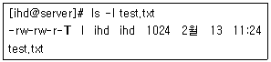
- 파일의 소유자는 ihd 이다.
- 파일의 소유 그룹은 ihd 이며, 그룹에 속한 사용자는 읽기와 쓰기가 가능하다.
- chmod 1664 test.txt로 설정하였다.
- 그룹에 속한 사용자는 파일을 삭제할 수 있다.
(정답률: 56%)
29. /etc/fstab 파일은 어떤 장치를 어디에 그리고 어떤 옵션으로 마운트 할 것인지 저장되어 있다. 다음 중 /etc/fstab 파일을 참고해서 마운트를 하지 않는 경우는?
- 부팅 과정에서 파일 시스템을 마운트 시킬 경우
- fstab에 기술된 파일 시스템을 장치 이름 혹은 마운트 포인트만 써서 마운트 시킬 경우
- mount 명령을 사용할 때 -a 옵션을 준 경우
- mount 명령을 사용할 때 어떤 옵션도 주지 않은 경우
(정답률: 50%)
30. 파일시스템 복구에 대한 설명으로 알맞은 것은?
- 리눅스 파일시스템은 데이터블록, 블록의 리스트, 디렉토리 정보를 포함한다.
- fsck명령은 파일 시스템을 조사하지만 손상된 파일의 복구는 할 수 없다.
- fsck명령을 수행한 후 재부팅 하지 않아도 된다.
- fsck를 수행한 후 종료값 ‘0’을 반환하면 연산에러를 의미한다.
(정답률: 53%)
31. 프로세스와 관련이 없는 시스템 호출은?
- fork
- vfork
- open
- clone
(정답률: 65%)
32. 시그널과 가장 관련이 적은 시스템 호출은?
- signal
- creat
- kill
- sigaction
(정답률: 63%)
33. 시그널(signal) 시스템 호출을 통해 사용자 정의 함수를 signum 번호의 시그널에 대해 시그널 핸들러로 설정할 수 있지만 일부 시그널들은 시그널 핸들러를 지정할 수 없다. 다음 중 시그널 핸들러를 지정할 수 없는 시그널은 무엇인가?
- SIGINT
- SIGTERM
- SIGUSRI
- SIGKILL
(정답률: 27%)
34. test 프로그램을 실행한 뒤, 일반 사용자가 다음과 같이 우선권을 변경한 경우 현재 우선권의 값은? (단, 초기 우선권은 0으로 가정한다.)
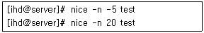
- 19
- 20
- 0
- 15
(정답률: 22%)
35. 리눅스 시스템에서 다음 프로그램의 실행결과로 알맞은 것은?
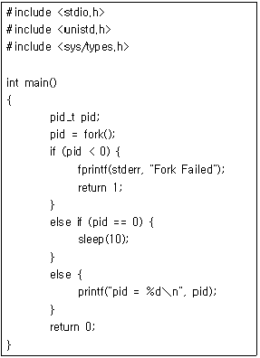
- 부모 프로세스는 자신의 프로세스 PID 값을 출력하고 종료된다.
- 부모 프로세스가 먼저 종료된 후 자식 프로세스의 부모 프로세스 PID는 1이다.
- 10초동안 자식 프로세스의 상태는 R(Running) 이다.
- 부포 프로세스가 종료될 때, 자식 프로세스도 종료된다.
(정답률: 37%)
36. 다음 rpm 질문 옵션 중 그 설명이 잘못된 것은?
- -a : 모든 패키지에 대하여 질문을 수행한다.
- -f <파일> : <파일>을 포함하는 패키지에 대하여 질문을 수행한다.
- -w < 패키지 파일> : 설치된 또는 설치되지 않은 <패키지 파일>에 대하여 질문을 수행한다.
- -l : 패키지 안의 파일을 보여준다.
(정답률: 67%)
37. 다음 중 dpkg를 이용하여 현재 사용자 설정이 유지된 채 삭제된 패키지의 목록을 출력하는 명령을 바르게 나타낸 것은?
- dpkg -C
- dpkg -l "*" | grep "^ic"
- dpkg -l "*" | grep "^uc"
- dpkg -l "*" | grep "^rc"
(정답률: 46%)
38. 다음 gcc에 대한 설명 중 틀린 것은?
- 품질이 매우 좋으며 이식성이 좋은 C, C++ 컴파일러이다.
- 모든 옵션이나 명령어를 사용자가 다 명령어 라인에 입력해야 한다.
- 결과 파일은 기본적으로 a.out 이라는 이름을 갖는다.
- 결과 파일의 이름을 바꾸기 위해서는 -r 옵션을 사용한다.
(정답률: 35%)
39. gcc의 -I 옵션에 대해 올바르게 설명한 것은?
- 헤더 파일의 이름을 지정한다.
- #include 문장에 언급하지 않은 헤더 파일을 지정하기 위해 쓰인다.
- 라이브러리를 검색할 디렉토리를 지정한다.
- 헤더 파일을 검색할 디렉토리를 지정한다.
(정답률: 37%)
40. 다음 tar 옵션 중 잘못 설명된 것은?
- -c : 새로운 묶음 파일을 작성한다.
- -t : 묶음 파일 이름을 지정한다.
- -x : 묶음 파일을 해제한다.
- -v : 묶음 과정을 보여준다.
(정답률: 81%)
41. 커널 컴파일 과정 중 이전 커널 컴파일에서 남아 있을지도 모르는 많은 불필요한 파일들을 정리하는 것과 동시에 모든 설정과 커널의 소스가 초기상태로 되돌아가도록 하기 위하여 사용하는 명령어는?
- make mrproper
- make config
- make modules
- make modules_install
(정답률: 83%)
42. 다음에서 설명된 리눅스 커널 모듈 관련 명령어가 순서대로 알맞은 것은?
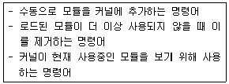
- insmod, rmmod, lsmod
- insertmod, deletemod, dspmod
- addmod, rmmod, listmod
- addmod, delmod, lsmod
(정답률: 72%)
43. 프린터 관련 명령어에 대한 설명으로 틀린 것은?
- lpr : 프린터로 파일을 인쇄할 경우에 사용한다.
- lps : 프린터가 현재 작업을 할 수 있는지 없는지에 관한 사항을 알려준다.
- lpq : 현재 프린트 작업 상태를 출력한다.
- lprm : 프린터 큐에 있는 지정된 출력작업을 취소할 수 있다.
(정답률: 48%)
44. 리눅스 시스템의 효율적인 관리를 위하여 부팅디스켓을 만들어 두고자 한다. 만약 플로피 디스크를 매체로 사용한다면 이를 포맷하는 명령어로 알맞은 것은?
- mkdir /new-disk fd0
- mount -t ext2/dev/fd0 /new-disk
- mkfs.ext2 /dev/fd0
- fsck.ext2 /dev/fd0
(정답률: 50%)
45. 다음 중 사운드 설정에 관련된 드라이버나 유틸리티로 보기 어려운 것은?
- OSS 드라이버
- ALSA 드라이버
- SANE 드라이버
- sndconfig
(정답률: 78%)
46. #lpr -#2 -P lp text.txt 라는 명령을 실행하였을때에 대한 설명으로 알맞은 것은?
- text.txt 파일을 lp라는 이름을 가진 프린터로 2장 출력한다.
- text.txt 파일을 lp라는 파일명으로 저장한다.
- text.txt 파일을 2번 장치로 출력한다.
- text.txt 파일을 2번 포트의 lp라는 프린터로 출력한다.
(정답률: 70%)
47. /etc/printcap 파일의 설정에 대한 다음 설명 중 틀린 것은?
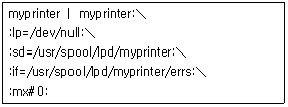
- sd : 프린터에 대한 스풀 디렉토리의 이름을 저장한다.
- lf : 프린터의 오류가 기록될 파일을 지정한다.
- lp : 프린트 할 디바이스를 지정한다.
- mx : 원격프린터의 이름을 지정한다.
(정답률: 62%)
48. 다음 중 DMA 채널에 대한 설명으로 틀린 것은?
- DMA는 Direct Momory Access의 약자이다.
- DMA는 기억장치와 주변장치 사이의 직접적인 데이터전송을 제공한다.
- 인터럽트와 같이 DMA 요구에는 번호가 붙여져 있다.
- DMA는 입출력 전송시 CPU의 리소스를 이용하여 데이터를 전송하므로 CPU의 부하가 증가한다.
(정답률: 88%)
49. ihd-3.4-1.i386.spec을 이용하여 RPM을 만들려고 한다. 바이너리와 소스패키지를 모두 생성하면서, 패키지를 만든 후 build 디렉토리를 지우려고 할 때 다음 명령 중 올바른 것은?
- rpmmake -bp --delete ihd-3.4-1.i386.spec
- rpmmake -bb --clean ihd-3.4-1.i386.spec
- rpmbulid -bi --delete ihd-3.4-1.i386.spec
- rembulid -ba --clean ihd-3.4-1.i386.spec
(정답률: 47%)
50. 다음 lsmod 명령의 실행결과에 대한 설명으로 알맞은 것은?
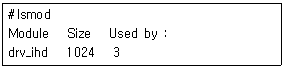
- 로드된 모듈을 더 이상 사용하지 않을 때 사용하는 명령이다.
- 모듈의 이름은 drv_ihd 이다.
- 모듈의 사이즈는 1024 Mbyte 이다.
- 이 모듈은 3번의 컴파일이 이루어 졌다.
(정답률: 83%)
51. 다음 시스템 로그 데몬과 관련된 파일, 데몬 그리고 실행방법에 대한 설명 중 틀린 것은?
- /sbin/syslogd : 데몬 프로그램
- /var/run/syslogd.pid : 데몬의 실행 방법
- /etc/syslog.conf : 데몬의 설정파일
- /etc/rc.d/init.d/syslog restart : 데몬의 재시작 방법
(정답률: 49%)
52. 다음 중 쉐도우 패스워드와 관련된 설명 중 올바른 것은?
- /etc/passwd 파일에 사용자 암호를 함께 저장한다.
- /etc/passwd 파일을 루트만 읽을 수 있게 바꾼다.
- 사용자 암호를 /etc/shadow에 별도로 저장한다.
- 쉐도우 패스워드를 쓰지 않아도 루트의 비밀번호는 사용자가 읽을 수 없는 곳에 저장된다.
(정답률: 48%)
53. 파일 시스템을 보호하기 위한 일반적인 원칙 중 틀린 것은?
- SUID/SGID를 사용자의 홈 디렉토리에 사용 하는 것은 보안에 좋다.
- 사용자의 파일 생성 umask를 가능한 제한된 값으로 조절한다.
- 보호되어야 할 파일에는 특수비트인 변경불가비트(Immutable Bit)를 사용한다.
- 주인이 없는 파일은 침입자의 흔적일 수 있으니 확인해 본다.
(정답률: 57%)
54. OpenSSH 클라이언트를 사용하여 ssh.server.com에 user1 계정으로 접속하는 명령어는?
- ssh --user user1 --server ssh.server.com
- ssh user1@ssh.server.com
- ssh --user user1 ssh.server.com
- ssh ssh.server.com/user1
(정답률: 53%)
55. PAM 구성 파일의 문법에 대한 설명 중 틀린 것은?
- type은 해당 모듈에 어떤 타입의 인증이 사용될 것인지를 알려준다.
- control은 이 모듈이 동작하지 않는다면 PAM에게 무엇을 해야 할지 알려준다.
- control이 requisite일 경우, 해당 모듈이 실패할 때 해당 서비스에서 유일한 모듈인 경우에만 PAM은 인증을 거부한다.
- type이 auth인 경우 패스워드보다 정교한 방법들을 쓸 수 있다.
(정답률: 46%)
56. 다음 COPS 명령 옵션에 대한 설명 중 틀린 것은?
- -d : 전에 출력된 메시지와 다를 경우에만 메시지가 출력된다.
- -x : 버전 정보를 출력한다.
- -s : 에러 메시지를 출력할 곳을 지정한다.
- -m : 특정 사용자에게 결과를 메일로 보낸다.
(정답률: 50%)
57. 다음 중 시스템을 설치한 후 사용자들이 시스템을 사용해 보기 전에 하는 백업을 의미하는 것은?
- 데이 제로 백업
- 변경분 백업
- 단순 백업
- 다단계 백업
(정답률: 72%)
58. 다음 중 백업의 중요성이 가장 낮은 디렉토리는?
- /root
- /home
- /var
- /proc
(정답률: 52%)
59. 다음 중 cpio에 대해 잘못 설명한 것은?
- 바이트 스와핑이 가능하다.
- 파이프를 통해 다른 프로그램으로 데이터를 넘겨줄 수 있다.
- 사본이 아닌 파일 자제와의 링크는 절대 만들 수 없다.
- 디렉토리를 다룰 수 없다.
(정답률: 71%)
60. 다음 iptables 명령에 대한 설명으로 틀린 것은?
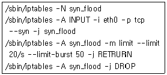
- TCP SYN flood를 통한 DoS 공격을 막기 위한 명령이다.
- 1초에 20회 이상의 SYN 패킷이 들어오면 RETURN 한다.
- 최대 50개의 패킷에 대해 그 평균값을 측정하여 동작한다.
- RETURN 되지 못한 패킷은 DROP 한다.
(정답률: 20%)
3과목: 네트워크 및 서비스의 활용
61. WWW와 HTML에 대한 설명 중 틀린 것은?
- 초기에 웹서비스는 텍스트와 최소화된 이미지를 바탕으로 하는 정적인 HTML페이지로 구성되었다.
- WWW는 World Wide Web의 약자이다.
- NCSA에서 만들었던 웹서버는 Lighttpd이며 이후에 아파치(Apache)로 이름이 바뀌었다.
- HTML은 Hyper Text Markup Language의 약자이다.
(정답률: 63%)
62. apache_2.2.4 버전 소스 컴파일시 443번 포트를 이용하는 SSL 보안서버 설치 옵션으로 올바른 것은?
- ./configure --prefix=/usr/local/apache --enable-modules=so --enable-mod-openssl
- ./configure --prefix=/usr/local/apache --enable-modules=so --enable-ssl
- ./configure --prefix=/usr/local/apache --enable-modules=so --enable-mod-ssl
- ./configure --prefix=/usr/local/apache --enable-modules=so --modssl
(정답률: 37%)
63. 웹서버 환경 설정에서 HostnameLookups On, Off는 어떠한 역할을 수행하는가?
- On으로 설정시 클라이언트 IP 확인후 다시 DNS 서버에 질의하여 도메인 이름으로 로그를 기록하며 Off로 설정시 111.111.111.111과 같이 아이피로 기록한다.
- On으로 설정시 로그를 기록하며 Off로 설정시 로그를 기록하지 않는다.
- On으로 설정시 클라이언트 IP를 111.111.111.111과 같이 로그를 기록하며 Off로 설정시 DNS 서버에 질의하여 도메인 이름으로 로그를 기록한다.
- On으로 설정시 클라이언트 IP를 캐쉬에 저장하고 Off로 설정시 저장하지 않는다.
(정답률: 40%)
64. CustomLog 지시자의 의미가 틀린 것은?
- %h - 호스트 이름
- %1 - 원격 로그 이름
- %s - 서버 상태
- %t - 전송량
(정답률: 30%)
65. 현재 웹서버의 아이피는 인터페이스 eth0에 192.168.0.100으로 설정되어 있다. IP 기반 가상호스팅을 위해 호스트 아이피 주소 192.168.0.101을 추가하는 명령은?
- route add -host 192.168.0.101 dev eth0:1
- route hostadd -host 192.168.0.101 dev eth0:1
- route add -host 192.168.0.101 dev eth0
- route hostadd -host 192.168.0.101 dev eth0
(정답률: 50%)
66. httpd 명령어에 사용 가능한 옵션에 대한 설명으로 틀린 것은?
- -d : ServerRoot 변수에 대한 지정
- -f : 환경 설정 파일을 지정
- -X : 내부적인 테스트를 위해 싱글 프로세스 모드로 실행
- -v : 로그 디렉토리 지정
(정답률: 37%)
67. 아파치 유틸리티 ab는 어떠한 유틸리티 인가?
- 아파치 환경설정 점검 유틸리티
- 아파치 벤치마크, 성능 테스트 유틸리티
- 아파치 로그 유틸리티
- 아파치 실행 유틸리티
(정답률: 71%)
68. SSL에 대한 설명으로 틀린 것은?
- 미국 넷스케이프 커퓨티케이션즈(Netscape Communications)회사가 개발 하였다.
- 인증 암호화 기능이 있다.
- SSL은 웹서버만 지원된다.
- 플랫폼과 어플리케이션에 독립적이다.
(정답률: 85%)
69. CGI를 사용하는 이유로 부적합한 것은?
- CGI를 통해 실시간으로 생성되는 동적 페이지를 만들 수 있다.
- 클라이언트의 입력 값을 받아 생성, 저장, 변경 할 수 있다.
- 양방향 통신을 할 수 있다.
- 고정된 페이지를 전송받는 단방향 통신을 할 수 있다.
(정답률: 73%)
70. 삼바 명령어에 대한 설명이 틀린 것은?
- testparm : smb.conf 파일의 문법적인 오류 점검을 한다.
- smbadduser : 삼바 서버에 계정을 생성한다.
- smbstatus : 삼바 서버의 상태를 확인할 수 있다.
- smbtree : 윈도우즈로 접속할 수 있다.
(정답률: 75%)
71. 삼바 서버에 접속할 때 4가지의 인증 레벨이 부여되는데 각 레벨별 설명이 틀린 것은?
- share : 사용자/패스워드 인증을 거치지 않고 바로 접근이 가능하다.
- user : 사용자/패스워드 인증을 통해 접근이 가능하다.
- sever : 사용자/패스워드 인증이 미리 등록된 유저만 접근이 가능하다.
- domain : 인증정보 처리를 윈도즈 NT 도메인에서 처리하는 방식이다.
(정답률: 34%)
72. NFS에 대한 설명 중 틀린 것은?
- 분산 파일 공유 시스템 소프트웨어이다.
- NFS는 FTP 기반의 파일 공유 서비스이다.
- NFS 서버-클라이언트 통신방법으로 RPC를 사용한다.
- NFS 파일 공유를 통한 디스크 공간 절약을 가져올 수 있다.
(정답률: 38%)
73. 다음 NFS 익스포팅 설정파일(/etc/exports)에 대한 설명 중 틀린 것은?
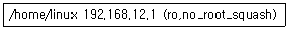
- root 권한으로 마운트 하더라도 nobody 사용자로 매핑된다.
- 192.168.12.1 아이피에서만 접근이 가능하다.
- NFS 마운트시 읽기만 가능하다.
- root 권한으로 마운트하면 root권한으로 마운트 접근된다.
(정답률: 62%)
74. Proftp에 대한 설명으로 틀린 것은?
- 컴퓨터들간에 파일을 교환하기 위한 표준 FTP프로토콜을 사용한다.
- 설정파일로 ftpd.conf 파일을 사용한다.
- 기본포트는 21번 포트를 사용한다.
- /etc/shells 파일로 사용자 접속 제한을 할 수 있다.
(정답률: 12%)
75. ProFTP의 Limit 항목의 Command에 대한 설명 중 틀린 것은?
- CWD : 디렉토리를 변경할 경우
- RMD : 디렉토리를 삭제할 경우
- RETR : 파일 이름을 바꿀경우
- DELE : 파일을 삭제할 경우
(정답률: 63%)
76. 메일 서비스를 위한 컴포넌트 MUA에 대한 설명으로 알맞은 것은?
- 아웃룻, 썬더버드등 메일 사용자 에이전트로 메일을 보거나 보낼 수 있는 역할을 핟나.
- 메일 전송 에이전트로 메일을 받아 다른 호스트로 메일을 전달하는 역할을 한다.
- 수신된 메시지를 사용자의 메일 박스에 저장해주는 역할을 한다.
- MUA는 서버에서만 사용되는 컴포넌트이다.
(정답률: 40%)
77. linux 계정 사용자에게 오는 메일을 webmaster 계정과 service@paran.com으로 포워딩 설정을 하려고 한다. alias 파일에 올바르게 작성된 것은?
- linux : webmaster,service@paran.com
- linux webmaster,service@paran.com
- webmaster,service@paran.com linux
- webmaster,service@paran.com :linux
(정답률: 28%)
78. 192.168.0.1 아이피에서 발송되는 스팸메일 수신을 막기 위해 /etc/mail/access 파일에 올바르게 작성한 것은?
- 192.168.0.1 RELAY
- 192.168.0.1 REJECT
- REJECT:192.168.0.1
- DROP:192.168.0.1
(정답률: 50%)
79. 다음 ( )안에 들어갈 내용으로 알맞은 것은?
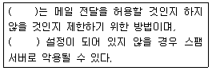
- alias
- pop3
- sendmail
- relay
(정답률: 30%)
80. sendmail.cf 파일에 아래와 같이 설정되어 있었으며 클라이언트 PC에서 아웃룩을 이용하여 포털사이트로 메일을 보내면 발송이 되지 않고 있다. 어떻게 수정하면 메일 발송이 가능한지 다음 내용 중 알맞은 것은?
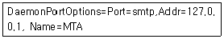
- Name=MUA
- Addr=0.0.0.0
- Addr=localhost
- Name=MDA
(정답률: 30%)
81. 메일 호스팅을 하는데 한 계정이 아웃룩으로 편지가 받아지지 않아 패스워드 점검을 로컬에서 진행하였다. 패스워드가 1234라고 가정할 때 다음 ( )안에 들어갈 내용을 순서대로 나열한 것 중 알맞은 것은?
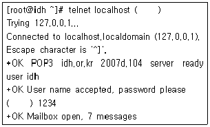
- 25, pass
- 143, passwd
- 110, pass
- 110, passwd
(정답률: 22%)
82. 슈퍼데몬 xinetd 데몬의 특징으로만 묶인 것은?
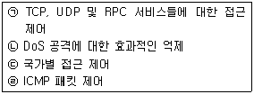
- ㉠, ㉡
- ㉡, ㉢
- ㉢, ㉣
- ㉠, ㉢
(정답률: 56%)
83. 다음 xinetd의 속성에 대한 설명으로 틀린 것은?
- per_source - 동일 호스트로부터의 서버 접속수 제한
- no_access - 접근할 수 없는 클라이언트 리스트
- instances - 서버에 주어지는 인수
- cps - 들어오는 접속 수를 제한하며 한계 숫자를 넘을 때 주어진 시간동안 서비스 비활성화
(정답률: 41%)
84. xinetd의 속성을 이용하여 특정 포트로 접근하게 되면 다른 서버로 포트를 넘길려고 한다. 어떤 속성을 이용하면 가능한가?
- redirect
- only_from
- bind
- socket_type
(정답률: 58%)
85. 다음 DNS 레코드에 대한 설명으로 틀린 것은?
- SOA - zone의 전체 설정. 마지막 레코드로 지정되어야 함
- NA - 해당 zone을 담당하는 네임 서버 주소
- A - 호스트 이름에 대응하는 IP 주소
- MX - 메일서버
(정답률: 56%)
86. DNS 서버를 구축하고 실행하기위해 테스트 할 때 사용되는 것이다. 다음과 같은 결과를 얻을 수 있는 명령어로 알맞은 것은?
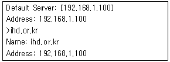
- netstat
- dig
- nslookup
- hostname
(정답률: 69%)
87. 다음 ( )안에 들어갈 내용으로 알맞은 것은?
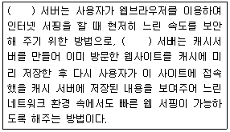
- NYS
- dhcp
- NIS
- Proxy
(정답률: 71%)
88. 프록시 서버 squid의 설정 파일(squid.conf)설정에서 캐쉬 메모리를 256M로 설정하는 것으로 알맞은 것은?
- cache_mem 256 MB
- cache_memory 256 MB
- mem 256 MB
- cache_memoty 256
(정답률: 70%)
89. 프록시 서버 squid의 설정 파일(squid.conf) 설정에서 모든 호스트에 대한 접속을 제한하는 것은 어느 것인가?
- icp_access allow all
- http_access deny all
- http_access allow all
- http_access deny manager !localhost
(정답률: 80%)
90. 다음 NIS 동작 구조에 대한 설명 중 틀린 것은?
- 슬레이브 서버는 단지 NIS 데이터베이스의 복사본을 가지고 있다.
- NIS 클라이언트들은 항상 서버로부터 서버의 DBM 데이터베이스에 저장된 정보들을 읽는다.
- NIS 데이터베이스들은 ASCII 데이터베이스로 부터 상속된 DBM 포맷 안에 있다.
- 기계는 하나의 NIS 도메인을 지정하여 하나의 NIS 서버만 사용할 수 있다.
(정답률: 80%)
91. NIS의 여러 프로그램 중에서 가장 중요하며 항상 실행 중에 있어야 하는 프로그램은 다음 중 어느 것인가?
- ypswitch
- yppoll
- ypmatch
- ypbind
(정답률: 66%)
92. DHCP에서 MAC 주소를 이용해 서버나 호스트의 위치를 알아낼 때 사용하는 프로토콜은?
- ICMP(Internet Control Message Protocol)
- TCP(Transmission Control Protocol)
- ARP(Address Resolution Protocol)
- UDP(User Datagram Protocol)
(정답률: 70%)
93. ADSL을 사용하는데 전산실에 동적으로 IP 주소를 할당해 주는 서버가 있다고 한다. 다음 중 어떤 것인가?
- Mail 서버
- Proxy 서버
- NIS 서버
- DHCP 서버
(정답률: 79%)
94. 다음 명령을 수행 하였을 때 나타나는 결과를 바르게 설명한 것은?
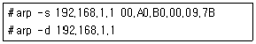
- 192.168.1.1은 MAC 주소가 00.A0.B0.00.09.7B로 변경되고 MAC 주소값이 지워진다.
- 네트워크 게이트웨이가 192.168.1.1로 설정되고 netmask가 지워진다.
- 00.A0.B0.00.09.7B MAC 어드레스가 차단되었다가 지워진다.
- 모두 동일한 명령으로 arp 값은 지워진다.
(정답률: 67%)
95. 다음 중 CVS의 기능이 아닌 것은?
- Export
- Branch
- Checkout
- Commit
(정답률: 14%)
96. 다음 해킹 기법 중 대상 서버를 찾아서 포트를 scan 할 때 사용하는 것은?
- smurf
- syn flooding
- ping attack
- port scan
(정답률: 83%)
97. 정상적인 기능을 하는 프로그램으로 가장하여 프로그램 내에 숨어서 의도하지 않은 기능을 수행하는 프로그램을 무엇이라고 하는가?
- 크래킹
- 트로이 목마
- 웜
- DoS
(정답률: 78%)
98. 시스템의 전체적인 파일들이 자신이 처음 설치한 그대로 유지되고 있는가를 확인하기 위한 보안 점검 프로그램은 무엇인가?
- Nessus
- iptables
- John The Ripper
- Tripwire
(정답률: 53%)
99. lastlog에 master 계정으로 외국 IP에서 정상적으로 로그인한 로그를 발견하였다. 패스워드가 쉬워서 크래킹을 당했는지 점검을 하려고 한다. 어떤 툴을 이용하면 되는가?
- Nessus
- iptables
- John The Ripper
- Tripwire
(정답률: 43%)
100. 리눅스에서는 기본적으로 방화벽의 역할을 할 수 있는 iptables가 있다. 100.100.10.12에서 입력 (INPUT)되는 패킷을 모두 무시하기 위한 명령은 다음 중 어느 것인가?
- intables -A INPUT -s 100.100.10.12 -jDROP
- intables -D INPUT -I 100.100.10.12 -tDROP
- intables -D INPUT -s 100.100.10.12 -mDROP
- intables -R INPUT -i 100.100.10.12 -jDROP
(정답률: 53%)